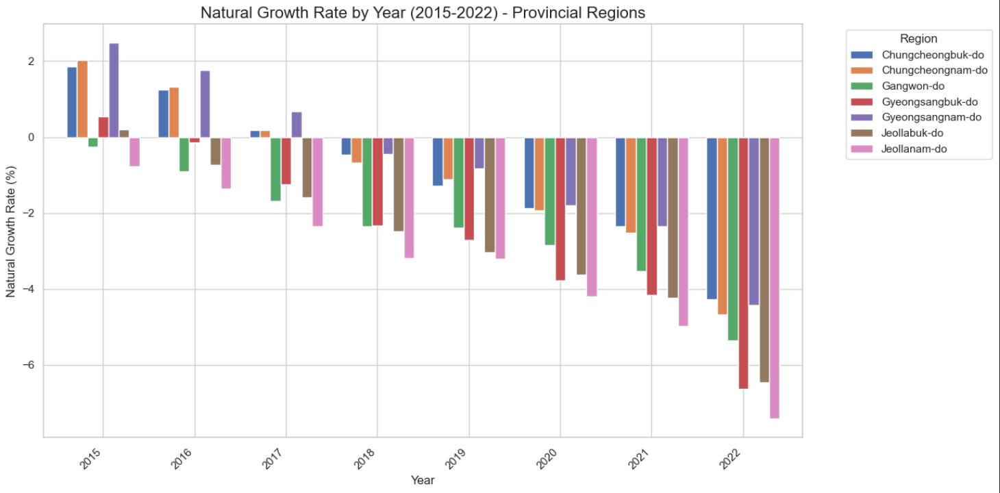
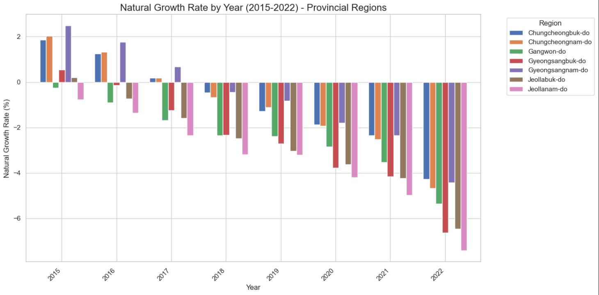
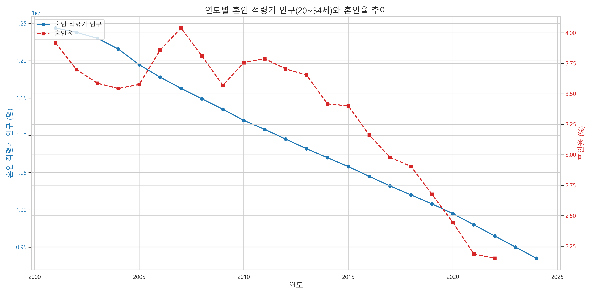
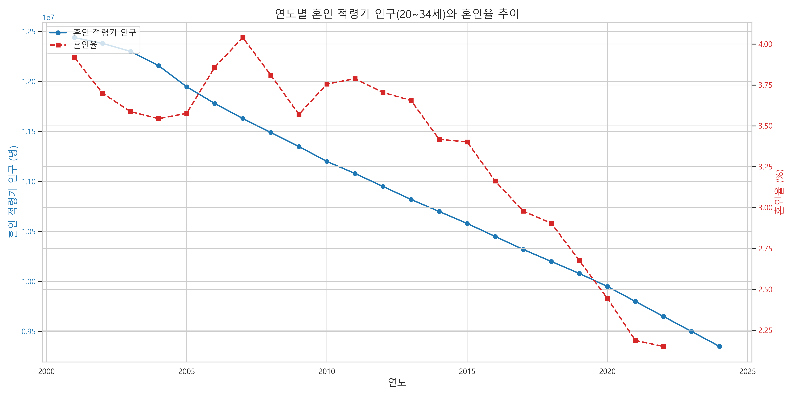

.png) 가설 :대도시의 자연증가율 보다 소도시의 자연증가율이 낮을것이다.
가설 :대도시의 자연증가율 보다 소도시의 자연증가율이 낮을것이다.  
가설 :지방의 낮은 혼인율이 인구 감소를 가속화한다.

가설 :지방의 낮은 혼인율이 인구 감소를 가속화한다. 
 가설 :결혼율 감소가 출산률 하락의 주요 원인일것이다.
가설 :결혼율 감소가 출산률 하락의 주요 원인일것이다. 
 가설 :개인소득의 증가는 자연증가율을 증가시킬 것이다.
가설 :개인소득의 증가는 자연증가율을 증가시킬 것이다.  가설 :수도권의 높은 생활비가 출산 기피로 이어진다
가설 :수도권의 높은 생활비가 출산 기피로 이어진다 
 가설 :20~30대의 높은 실업률이 결혼율 감소에 주요 원인일 것이다
가설 :20~30대의 높은 실업률이 결혼율 감소에 주요 원인일 것이다 

 
{% endblock %}

{% endblock %}